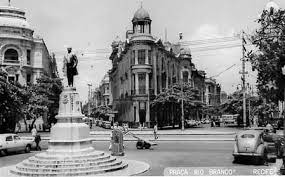
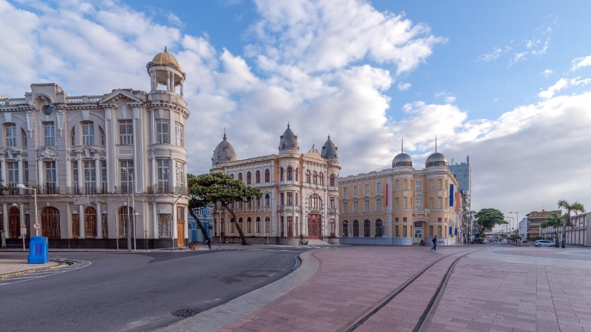
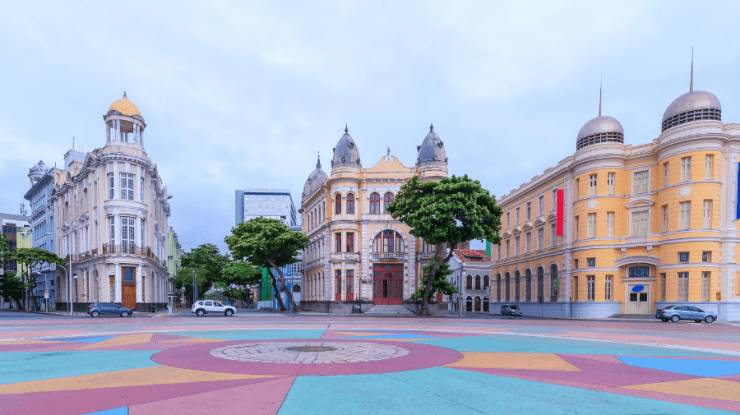

História
O Marco Zero marca o local onde a cidade do Recife foi fundada, em 1537. O marco original, feito de pedra, foi erguido em 1937, mas foi substituído por um novo marco, feito de bronze, em 1986.
Localização
O Marco Zero está localizado na Praça Barão do Rio Branco, no bairro do Recife Antigo. A praça é um local de lazer e entretenimento, e abriga diversos restaurantes, bares e lojas.
Atrativos
Além do Marco Zero, a Praça Barão do Rio Branco abriga outros atrativos turísticos, como a estátua do Barão do Rio Branco, a rosa dos ventos de Cícero Dias e o Parque de Esculturas.
O Marco Zero é um local imperdível para quem visita a cidade do Recife. É um lugar histórico, cultural e turístico, que oferece uma vista privilegiada do mar.